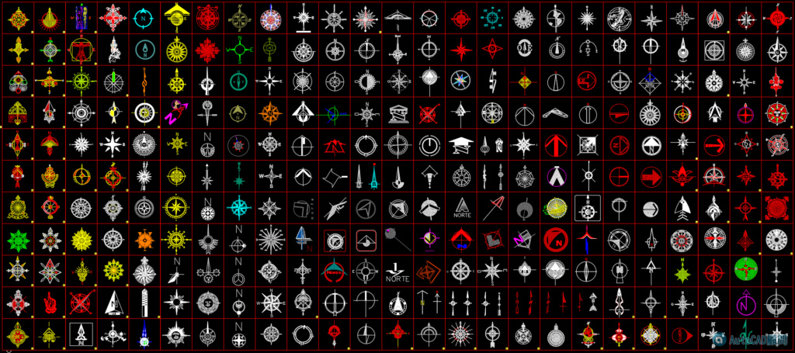

大家好:
我是蘋果爸，這是我網路上蒐集的圖塊，請自由使用及分享!
更多免費圖塊及資源都在AutoCAD顧問論壇😁
歡迎回論壇免費下載~
請您記得有好康也要分享
一起魚幫水水幫魚😎

[b]😘會員好康福利來囉～指北針大全.DWG免費下載～
註：論壇註冊免費加入
👇專屬B會員請直接前往專屬資源版區下載(免回文)
[專屬分享]AutoCAD 2D 指北針大全.DWG
自動化面積計算、圖形陣列及批次出圖
https://www.autocad-tw.com/t30210-topic